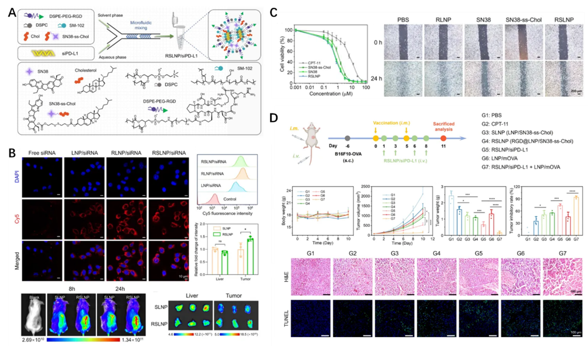
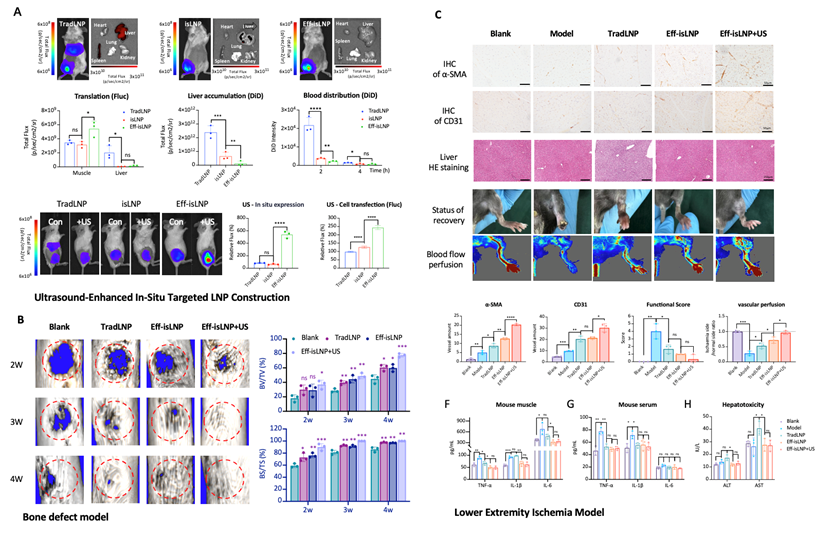

研究背景与意义
1.mRNA传染病疫苗
mRNA疫苗作为第三代核酸疫苗，相较于第一代灭活疫苗和第二代重组蛋白疫苗，具有成本低、保护率高、研发与制备周期短等突出优势。然而，传统脂质纳米粒（LNP）载体存在一定毒性，限制了mRNA疫苗的可给药剂量与适用范围。针对这一关键瓶颈，课题组采用两种具有协同作用的可离子化脂质，构建了新型复合 LNP 递送系统，显著提升内体逃逸效率及体内外 mRNA 表达水平（Nat. Commun. 2020, 11, 2424）。在包载带状疱疹 mRNA 抗原后，该复合 LNP 在多种小鼠模型中均诱导出强效且持续超过 7 个月的体液与细胞免疫应答；在豚鼠攻毒实验中表现出与已上市疫苗 Shingrix（GSK）相当的保护效果，且未观察到显著不良反应。研究同时发现，抗原糖基化位点的去除会显著改变免疫原性，为新型 mRNA 疫苗的设计提供了新的结构学思路（Adv. Mater. 2023, 2310886）。除带状疱疹疫苗外，课题组还同步开展了针对支原体感染、轮状病毒及呼吸道合胞病毒（RSV）的 mRNA 疫苗研发，均展现出良好的免疫原性和应用前景，具备进一步向转化研究推进的潜力。
2.mRNA肿瘤免疫疗法
肿瘤免疫微环境的重塑是提升肿瘤免疫治疗效果的关键。课题组构建了可同时递送化疗前药 SN38 与 siPD-L1 的脂质纳米粒（LNP）体系，通过 SN38 诱导的肿瘤免疫原性细胞死亡（ICD）以及 siRNA 介导的免疫检查点阻断实现协同作用，有效逆转肿瘤免疫抑制微环境，使“冷肿瘤”向“热肿瘤”转化，从而显著增强 mRNA 肿瘤疫苗的免疫效应。在高度恶性的黑色素瘤和三阴性乳腺癌模型中，即使是在低剂量条件下，RSLNP/siPD-L1 亦能够显著提高 mRNA 肿瘤疫苗的抗肿瘤活性（Nano Today 2025, 102757）。该研究为 mRNA 肿瘤疫苗为核心的联合免疫治疗提供了新的策略与递送思路。此外，课题组还同步开展针对个体化肿瘤疫苗的新抗原设计、体内免疫细胞精准改造等相关研究，并已与多家上市公司开展转化合作，为推动肿瘤免疫治疗从机制研究迈向临床应用奠定了坚实基础。
3.mRNA组织再生药物
针对现有mRNA脂质纳米颗粒（LNP）肝脏蓄积性强、局部递送效率低且存在潜在肝毒性的关键瓶颈，参与人构建了一种具有原位靶向与超声响应能力的新型LNP平台（Eff-isLNP）。该系统通过表面工程化修饰与内部结构重塑，实现了mRNA在病灶部位的高效滞留与表达，并将非靶器官分布降低90%以上。结合外场超声的“声打印”效应，可进一步将局部mRNA表达提升3–8.5倍，在不引发全身炎症与肝毒性的前提下，于下肢缺血与临界骨缺损模型中分别驱动功能性的血管新生与“血管‑成骨耦合”再生，显著加速组织修复进程。该平台为安全、高效的局部mRNA药物治疗提供了新范式。
核心方法与技术
- {{核心技术或方法一}}
- {{核心技术或方法二}}
- {{核心技术或方法三}}

图1. 复合型LNP的构建与疫苗药效。（A）复合型LNP的可离子化脂质结构；（B）复合型LNP纳米颗粒结构示意图；（C）复合型LNP与临床LNP肌肉注射后的mRNA表达效率;（D, E, F）复合型LNP与临床获批带状疱疹亚单位疫苗抵御带状疱疹病毒感染豚鼠皮肤。
图2. （A）RSLNP/siPD-L1的合成与表征。（B）RSLNP/siPD-L1的细胞递送和肿瘤靶向能力。（C）RSLNP提高药物的细胞摄取率，并高效抑制B16F10细胞的迁移。（D）RSLNP/siPD-L1与mRNA疫苗联合治疗黑色素瘤的抑瘤效果。
图3. （A）超声增强型原位靶向Eff-isLNP构建。此mRNA递送平台在（B）骨缺损模型中加速股骨愈合；（C）下肢缺血模型中加速恢复血流灌注的同时避免了肝脏损伤。
近期重要进展
{{列举1-3项最重要进展，可包含数据或关键发现...}}
未来目标
{{未来1-2年的研究计划和发展目标...}}